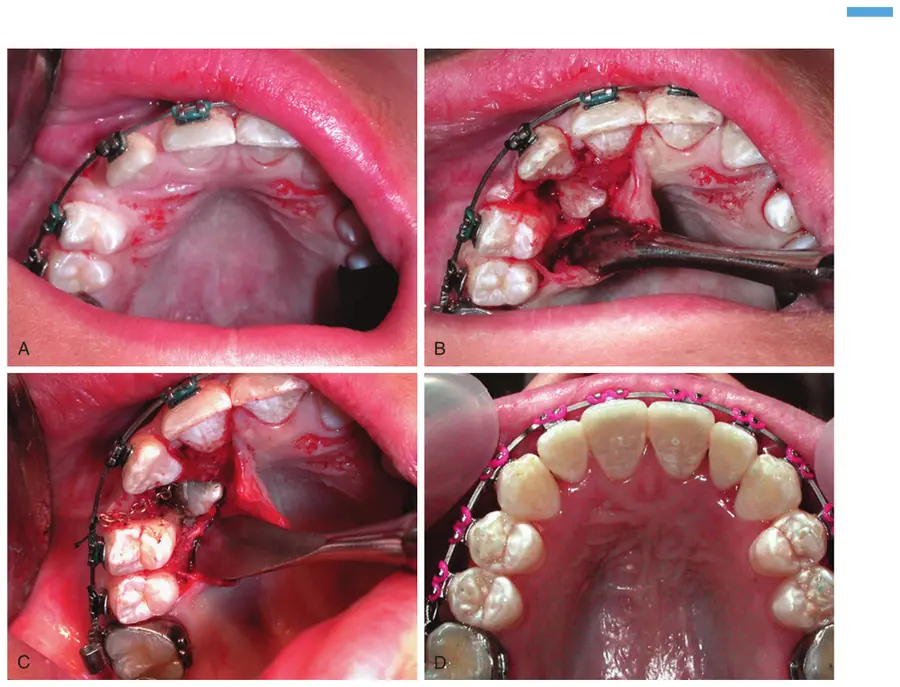

نسخه استخراجشده؛ ترجمه یا تأیید علمی انجام نشده است. وضعیت: captured
پس از مولرهای سوم مندیبل و ماگزیلا، شایعترین دندان نهفتهی بعدی کانین ماگزیلاست.

اگر دندانپزشک تصمیم بگیرد دندان برداشته شود بهجای اینکه ارتودنتیک جابهجا شود، باید مشخص شود دندان در کدام موقعیت است: لابیال، به سمت کام، یا در میانهی زائدهی آلوئولار.
پس نتیجه این است: در ارزیابی کانین نهفتهی ماگزیلا برای برداشتن، مهمترین ارزیابی جراح، موقعیت باکولینگوال دندان است. و بهترین ابزار این ارزیابی CBCT است.
و همین ملاحظات برای نهفتگیهای دیگر هم لازم است — مثل پرمولرهای مندیبل و دندانهای اضافی.
یک استثنای قابل اتکا: دندان اضافی در خط وسط ماگزیلا، که مزیودنس نامیده میشود، تقریباً همیشه در کام یافت میشود و باید از جهت پالاتال برای برداشتن به آن نزدیک شد.
وقتی کانین مدفون طوری قرار گرفته که دستکاری ارتودنتیک میتواند به موقعیتدهی درست کمک کند، دندان میتواند اکسپوز و براکتگذاری شود.
مسیر کار در حالت لابیال:
کانین پالاتالی هم مثل لابیالی میتواند جابهجا یا برداشته شود؛ اگر قرار است جابهجا شود، با جراحی اکسپوز و با ارتودنسی هدایت میشود.
و اگر دندان به سمت کام باشد، دو تفاوت مهم: